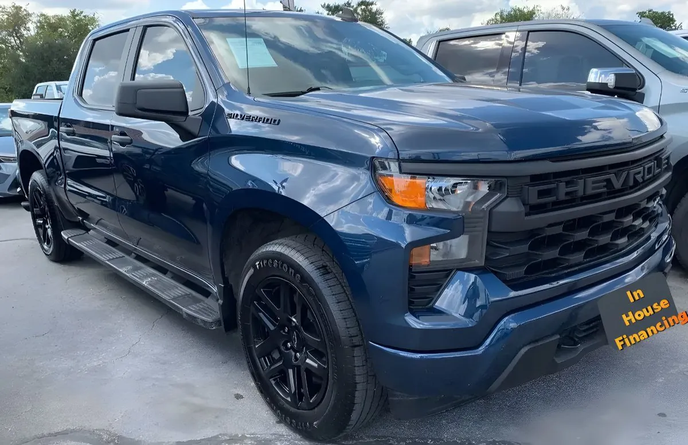

2023 Chevrolet Silverado Custom
Blue • ID CCH-409

1/4General
| Year | 2023 |
|---|---|
| Make | Chevrolet |
| Model | Silverado Custom |
| Type | Truck |
| Color | Blue |
| Mileage | 72,000 miles |
| Seats | To be confirmed |
| Drivetrain | To be confirmed |
Great for
For anyone who needs a truck for work and everyday driving.
Year, mileage and features come from the inventory data; confirm this unit's exact details with the dealer. This sheet shows no prices: the dealer provides them in writing.